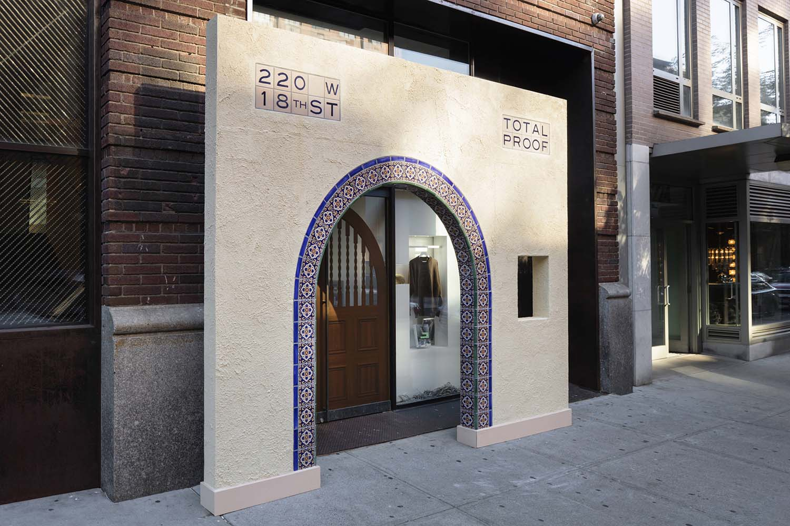
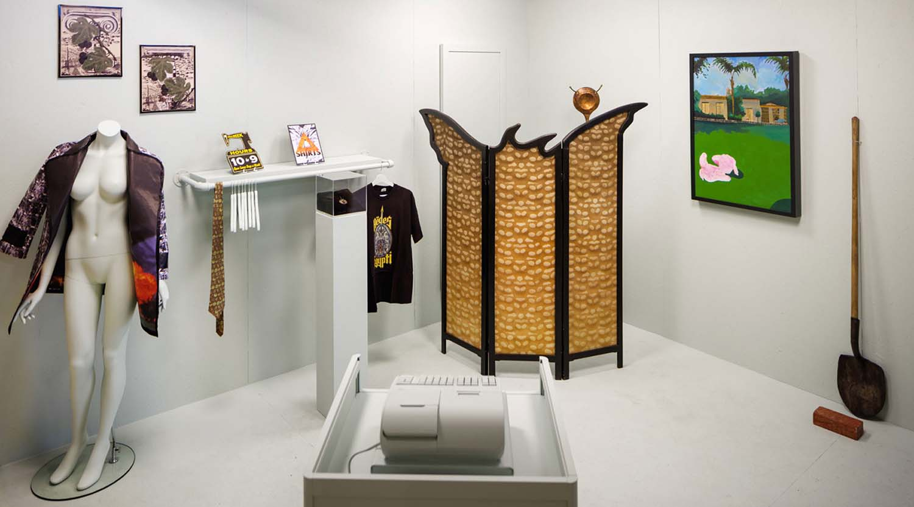
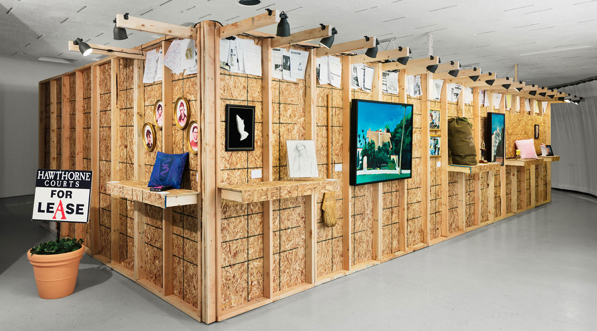

TOTAL PROOF: The GALA Committee, 1995-1997, was the first comprehensive New York presentation of the GALA Committee’s In the Name of the Place, a covert conceptual artwork deployed on the primetime television show Melrose Place from 1995–97.




All images credit: Installation view of TOTAL PROOF: The GALA Committee 1995-1997 at Red Bull Arts New York, 2016. Photography by Lance Brewer.
SELECTED PRESS
Artforum, by Naomi Fry
The New York Times, by William Grimes
Art in America, by Sean J. Patrick Carney
COLLABORATORS
Chief Curator: Max Wolf
Associate Curator & Programming Coordinator: Candice Strongwater
Production Manager: Jennifer Cooper
Exhibition design: Lot-ek
Graphic design: DOSS
The GALA Committee: Jon Lapointe, Dallas Moore, Leslie Dill, Joe Girandola, and many more
Editorial Advisors: Helen Nagge & Tamalyn Miller of the GALA Committee, Mel Chin Studios, Amanda Wiles, Corrina Mehiel, Barren Brown
PROGRAMS
In Conversation with the GALA Committee: Nearly twenty years after the GALA Committee’s historic collaboration with Melrose Place, the panel reunited GALA and the project’s key members to discuss In the Name of the Place. Speakers included Mel Chin, Melrose Place cast member Rob Estes, former LA MOCA curator Julie Lazar, DCLA Commissioner Tom Finkelpearl, GALA’s key Project Coordinator Jon Lapointe, and Professor of Film and Media Studies at the University of California, Dr. Constance Penley, with other key GALA members in attendance.